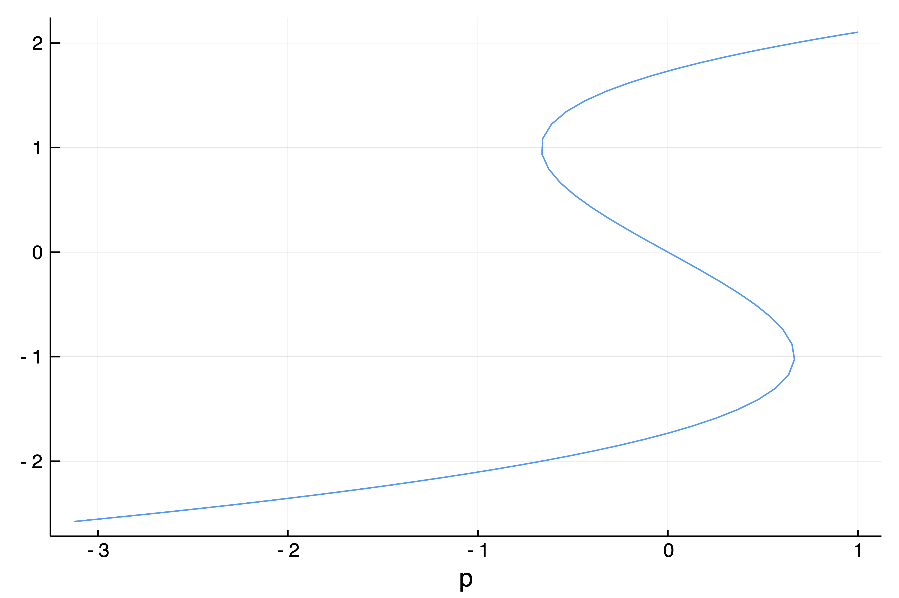

Iterator Interface
The iterator interface gives the possibility of stepping through the numerical steps of the continuation procedure. It thus allows to inject custom monitoring function (saving, plotting, bifurcation detection, ...) at will and during the continuation run. In short, it allows to completely re-write the continuation algorithm as one sees fit and this, in a straightforward manner.
The general method continuation is built upon this iterator interface and we refer to the source code for a complete example of use.
The iterator provided below does not compute eigenvalues nor perform bifurcations detection.
Initialization
More information about iterators can be found on the page of julialang.
The interface is set by defining an iterator, pretty much in the same way one calls continuation:
iter = PALCIterable(F, J, x0, p0, lens::Lens, opts; kwargs...)Stepping
Once an iterator iter has been defined, one can step through the numerical continuation using a for loop:
for state in iter
println("Continuation step = ", state.step)
endThe state::PALCStateVariables has the following description. It is a mutable object which holds the current state of the continuation procedure from which one can step to the next state.
The for loop stops when done(iter, state) returns false. The condition which is implemented is basically that the number of iterations should be smaller than maxIter, that the parameters should be in (pMin, pMax)...
PseudoArcLengthContinuation.PALCStateVariables — Typestate = PALCStateVariables(ds = 1e-4,...)Returns a variable containing the state of the continuation procedure. The fields are meant to change during the continuation procedure.
Arguments
z_predcurrent solution on the branchtautangent predictorz_oldprevious solutionisconvergedBoolean for newton correctionitnewtonNumber of newton iteration (in corrector)stepcurrent continuation stepdsstep sizethetatheta parameter for constraint equation in PALCstopcontinuationBoolean to stop continuation
Useful functions
copy(state)returns a copy ofstatesolution(state)returns the current solution (x, p)getx(state)returns the x component of the current solutiongetp(state)returns the p component of the current solution
You can also call continuation(iter) to have access to the regular continuation method used throughout the tutorials.
Basic example
We show a quick and simple example of use. Note that it is not very optimized because of the use of global variables.
using PseudoArcLengthContinuation, SparseArrays, LinearAlgebra, Plots, Setfield
const PALC = PseudoArcLengthContinuation
k = 2
# functional we want to study
F = (x, p) -> (@. p + x - x^(k+1)/(k+1))
# Jacobian for the fonctional
Jac_m = (x, p) -> diagm(0 => 1 .- x.^k)
# parameters for the continuation
opts = PALC.ContinuationPar(dsmax = 0.1, dsmin = 1e-3, ds = -0.001, maxSteps = 130, pMin = -3., pMax = 3., saveSolEveryNsteps = 0, newtonOptions = NewtonPar(tol = 1e-8, verbose = true))
# we define an iterator to hold the continuation routine
iter = PALC.PALCIterable(F, Jac_m, [0.8], 1., (@lens _), opts; verbosity = 2)
resp = Float64[]
resx = Float64[]
# this is the PALC algorithm
for state in iter
# we save the current solution on the branch
push!(resx, getx(state)[1])
push!(resp, getp(state))
end
# plot the result
plot(resp, resx; label = "", xlabel = "p")and you should see:

Additional information
If you want to customize the iterator to your needs, perhaps the best source of inspiration is the code of the function continuation!(it::PALCIterable, state::PALCStateVariables, contRes::ContResult) where the iterator at its fullest. You will see how the eigen-elements and the stability are computed, how bifurcations are detected and how results are saved.